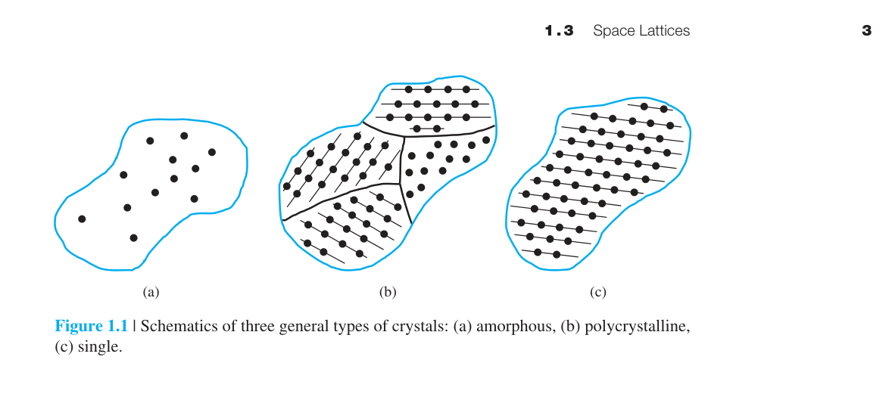
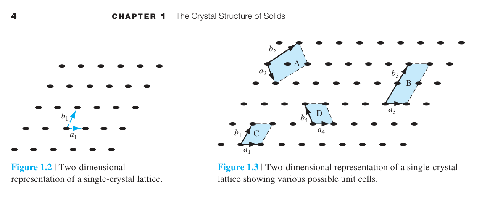
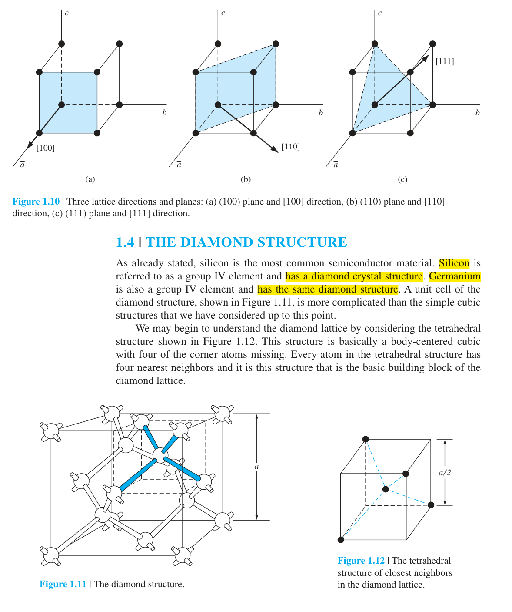
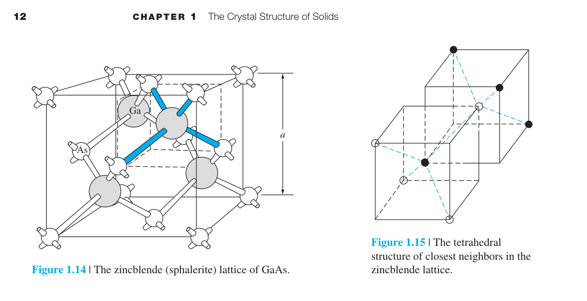
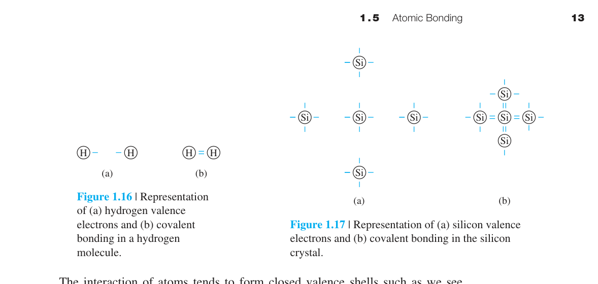
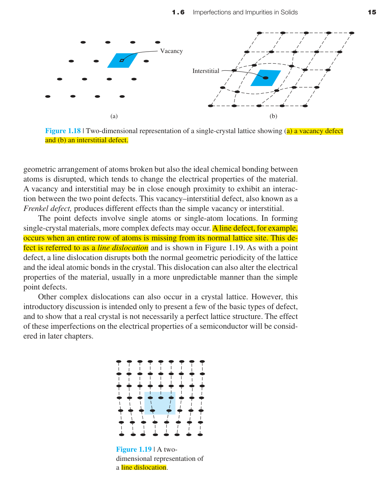
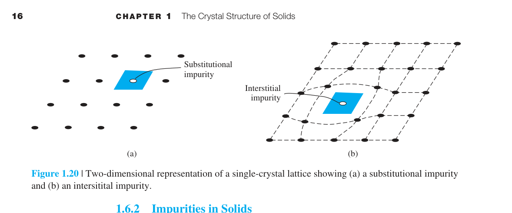

固體的晶體結構
1.0 本章預覽
本書旨在探討半導體材料與元件的電特性。半導體通常為單晶材料——整個晶片上的數十億個電晶體都製造在同一塊近乎完美的矽單晶上。單晶材料的電特性不僅取決於化學組成（是 Si 還是 GaAs），更取決於原子在三維空間中的排列方式。
在本章中，我們將學習：
- 固體的三種分類——非晶、多晶與單晶
- 單位晶胞與原始晶胞的概念
- 三種簡單晶體結構（sc, bcc, fcc）的原子密度計算
- 單晶半導體材料的生長方法（柴氏法、磊晶）
關鍵概念
- 晶體幾何：空間晶格 + 基底原子；SC、BCC、FCC 與 Miller 指數描述結構。
- 鑽石結構：兩個 FCC 子晶格偏移，Si/Ge 的共價四面體鍵結基礎。
- 晶面取向：(100) 面主導矽晶圓，影響蝕刻、氧化與磊晶品質。
- 缺陷與雜質：點/線/面缺陷改變散射；施體/受體是摻雜起點。
- 晶體成長：Czochralski 與磊晶決定單晶品質與外延層。
🧭 本章推理地圖
- 已知條件單晶週期排列與晶格常數決定原子密度與對稱性（§1.2–§1.4）
- 中間機制鍵結方向與堆積方式形成鑽石/閃鋅礦結構與晶面性質（§1.5）
- 材料後果缺陷、雜質與成長方法改變載子散射與摻雜能力（§1.6–§1.7）
- 工程用途選擇晶圓取向、基板與外延製程，支撐後續能帶與元件設計（Ch3、工程決策）

1.1 半導體材料
半導體是一類導電率介於金屬與絕緣體之間的材料。但它們真正的特別之處不在於導電率的大小，而在於導電率可以被精確控制——透過摻雜（第四章）可以將導電率調整超過十個數量級。這是金屬和絕緣體做不到的。
半導體分為兩大類：
| 類別 | 代表材料 | 特點 |
|---|---|---|
| 元素半導體（第 IV 族） | Si（矽）、Ge（鍺） | 單一元素，Si 是主流（佔全球半導體市場 >95%） |
| 化合物半導體（III–V 族） | GaAs、GaN、InP | 直接能隙→適合光電；高電子遷移率→適合高頻 |

元素半導體的優點是材料系統簡單、製程成熟，尤其矽能與高品質氧化層自然整合。
化合物半導體的優勢則在能隙型態與遷移率，例如 GaAs 適合高頻與光電元件，GaN 適合高功率與藍光發光。
因此材料選擇不是只看導電率，而是看能隙、晶格、氧化層、遷移率與製程生態的整體取捨。
例題：為什麼 MOSFET 產業以 Si 為主？
因為 Si 能形成穩定且高品質的 SiO₂，適合作為閘極介電層與表面鈍化層；這讓 Si 在大規模積體電路中具備壓倒性製程優勢。
1.2 固體的三種分類
非晶（Amorphous）
原子排列沒有長程有序——就像一袋隨機堆放的彈珠。非晶矽（a-Si）用於薄膜太陽能電池和 LCD 顯示器的薄膜電晶體，因為它可以在大面積玻璃基板上低溫沉積，不需要單晶的高溫製程。代價是載子遷移率遠低於單晶矽。
多晶（Polycrystalline）
由許多小單晶區域（晶粒）組成，晶粒之間由晶界分隔。晶界處原子排列紊亂→載子散射→遷移率降低。多晶矽用於太陽能電池和某些閘極材料，成本比單晶低但性能也較差。
單晶（Single Crystal）
整個材料中原子呈完美的週期排列——沒有晶界，沒有缺陷（理想上）。所有高效能半導體元件都必須使用單晶。為什麼？因為晶界會引入額外的能態（陷阱），捕捉載子、增加漏電流、降低元件速度。你能想像一個有數十億個電晶體的處理器，如果每個電晶體的性能都因晶界而不同，會有多混亂嗎？

| 性質 | 非晶 | 多晶 | 單晶 |
|---|---|---|---|
| 遷移率（Si, cm²/V·s） | ∼0.1–1 | ∼10–100 | ∼1350（電子） |
| 有序範圍 | < 1 nm | 晶粒 10 nm–µm | 整個晶片 |
| 製備溫度 | 200–400°C | 500–800°C | >1000°C |
| 典型應用 | TFT、薄膜太陽能 | 太陽能電池、閘極 | IC、功率元件 |
非晶材料犧牲載子傳輸品質，換取低溫、大面積與低成本製程。
多晶材料位於非晶與單晶之間，晶粒內部有序，但晶界會限制電性一致性。
例題：何時可接受非晶矽？
若應用是大型顯示器 TFT，速度需求不高但面積很大，非晶矽的低溫大面積沉積反而有優勢；若是 CPU，則必須使用高品質單晶矽。
1.3.1 原始晶胞與單位晶胞
要描述一個含有 $10^{22}$ 個原子的晶體，不必逐一列出每個原子的位置。只需要找出最小的重複單元——這就是單位晶胞（unit cell）的概念。把這個單元在三個方向上無限複製，就得到整個晶體。
每個晶格點可以用向量來表示：
其中 $\vec{a}, \vec{b}, \vec{c}$ 是晶格的基本平移向量（不必互相垂直，長度也不必相等）；$p, q, s$ 是整數。這三個向量的大小 $|\vec{a}|, |\vec{b}|, |\vec{c}|$ 就是晶格常數（lattice constants）——晶體最基本的幾何參數。
原始晶胞（primitive cell）是體積最小的單位晶胞。但有時候為了方便（例如希望邊互相垂直），我們會使用體積更大的「非原始」單位晶胞。對於立方晶系，通常使用一個立方體作為單位晶胞（即使它可能不是原始晶胞）。

空間晶格是描述週期性的數學骨架，實際晶體還需要在每個晶格點加上基底原子。
例題：為什麼常用非原始立方晶胞？
雖然 FCC 的原始晶胞不是立方體，但傳統立方晶胞能清楚顯示對稱性與原子位置，方便計算原子數、面密度與方向。
1.3.2 基本晶體結構
三種最基本的立方晶體結構（圖 1.5）：
| 結構 | 角落原子 | 額外原子 | 每單位晶胞等效原子數 |
|---|---|---|---|
| 簡單立方 (sc) | 8 個，各共享 1/8 | 無 | 1 |
| 體心立方 (bcc) | 8 個角落 | 1 個在中心 | 2 |
| 面心立方 (fcc) | 8 個角落 | 6 個在面心（各共享 1/2） | 4 |

原子體密度——每 cm³ 有多少個原子——是晶體最基本的參數之一。計算公式：
📐 例題 1.1 — bcc 原子體密度
$a = 5\ \text{Å}$。bcc 每晶胞 2 個原子。
體密度 $= 2/(5\times10^{-8})^3 = 1.6\times10^{22}$ atoms/cm³。
這是一個極大的數字——每立方公分有 $1.6\times10^{22}$ 個原子。對比之下，典型的摻雜濃度只有 $10^{14}$–$10^{18}$ cm⁻³，也就是說雜質原子僅佔總原子數的十億分之一到百萬分之一。
配位數（Coordination Number）：每個原子的最近鄰原子數。sc = 6（上下左右前後）、bcc = 8（體心到 8 個角落）、fcc = 12（每個面心原子接觸 4 個同面角落 + 4 個相鄰面心 + 4 個下一層面心）。配位數越高→原子堆積越緊密→鍵結越強。
堆積因子（Packing Fraction）：假設原子是硬球，計算原子球體積佔單位晶胞體積的比例。sc = 52%、bcc = 68%、fcc = 74%。fcc 的 74% 是等徑球最密堆積的理論極限。Si 的鑽石結構只有 34%——因為共價鍵的方向性限制了原子不能任意緊密排列。
晶胞內等效原子數來自共享關係：角落原子由八個晶胞共享，面心原子由兩個晶胞共享。
例題：為什麼 FCC 每晶胞有 4 個原子？
8 個角落原子各貢獻 1/8，合計 1 個；6 個面心原子各貢獻 1/2，合計 3 個，所以總共是 4 個等效原子。
1.3.3 晶面與米勒指數

真實晶體不是無限大的——它必定在某個表面終止。半導體元件就是在這個表面上製造的。我們需要一種方法來命名和描述晶體中的不同平面。這就是米勒指數的用途。
求米勒指數的三步驟：
- 找出平面在 $\vec{a}, \vec{b}, \vec{c}$ 軸上的截距（以晶格常數為單位）
- 取截距的倒數
- 乘以最小公分母，得到三個整數 $(hkl)$
三個最常用的晶面：
| 平面 | 截距 | 米勒指數 | 面原子密度（sc, 相對） |
|---|---|---|---|
| 平行於 $b$ 和 $c$ 軸 | $p=1,q=\infty,s=\infty$ | (100) | $1/a^2$ |
| 對角線貫穿一面 | $p=1,q=1,s=\infty$ | (110) | $1/(\sqrt{2}a^2)$ |
| 體對角線 | $p=1,q=1,s=1$ | (111) | $1/(\sqrt{3}a^2)$ |

Miller 指數把晶面的幾何截距轉成整數標記，讓不同晶面可以被一致命名與比較。
晶面不同代表表面原子密度、懸鍵密度與化學反應性不同，因此直接影響製程。
例題：求一個晶面的 Miller 指數
若某平面在三軸截距為 $(1,1,\infty)$，取倒數得 $(1,1,0)$，所以該晶面記為 $(110)$。
1.3.4 晶體中的方向
方向用方括號 $[hkl]$ 表示（區別於表示晶面的圓括號 $(hkl)$）。方向代表晶格中的一條直線——從原點出發，沿向量 $h\vec{a}+k\vec{b}+l\vec{c}$ 前進。
決定方向指數的步驟：
- 從原點到方向上任意一點，寫出以晶格常數為單位的座標 $(u,v,w)$
- 如果座標有分數，乘以最小公分母化為整數
- 用方括號表示：$[uvw]$
三個基本方向（立方晶系）：
| 方向 | 描述 | 對應的垂直晶面 |
|---|---|---|
| [100] | 沿 $a$ 軸正向 | (100) |
| [010] | 沿 $b$ 軸正向 | (010) |
| [001] | 沿 $c$ 軸正向 | (001) |
方向族 $\langle hkl \rangle$：晶體的對稱性使某些方向等效。例如在立方晶系中，$[100]$、$[\bar{1}00]$、$[010]$、$[0\bar{1}0]$、$[001]$、$[00\bar{1}]$ 六個方向在物理上等效——統稱為 $\langle100\rangle$ 方向族。$\langle110\rangle$ 包含 12 個等效方向（六個面的對角線）。$\langle111\rangle$ 包含 4 個等效方向（四條體對角線）。
重要關係（僅限立方晶系）：$[hkl]$ 方向垂直於 $(hkl)$ 面。這是因為立方晶系的三個軸互相垂直。在六方晶系中，這個垂直關係不成立——需要用四指數系統 $[hkil]$。

例題：辨認方向族
在立方晶系中，$[100]$、$[010]$、$[001]$ 及其反向因對稱性等效，統稱為 $\langle100\rangle$ 方向族。
1.4 鑽石結構
矽（Si）的晶體結構被稱為鑽石結構（diamond structure）——因為碳（鑽石）也是同樣的結構。它不是簡單的 sc、bcc 或 fcc，而是兩個 fcc 次晶格沿體對角線方向偏移 1/4 的結果。每個 Si 原子有四個最近鄰原子，排列成正四面體——這就是為什麼 Si 的共價鍵夾角是 109.5°。
閃鋅礦結構（zincblende）與鑽石結構完全相同，只是兩種次晶格由不同原子佔據——例如 GaAs 中 Ga 在一個 fcc 次晶格，As 在另一個。這種不對稱性賦予 GaAs 許多 Si 所沒有的光電特性（如直接能隙，見第三章）。

鑽石結構的低堆積密度不是缺點，而是共價鍵方向性與四面體幾何的自然結果。
每個 Si 原子只和四個最近鄰形成強共價鍵，這個局部結構會一路影響能帶與有效質量。
GaAs 的閃鋅礦結構保留四面體配位，但兩個子晶格由不同元素佔據，因此對稱性與光學選擇規則不同。
例題：為什麼 GaAs 常用於發光元件？
GaAs 的晶體與能帶結構使其具有直接能隙，電子與電洞可較有效率地輻射復合，因此適合 LED 與雷射二極體。
1.5 原子鍵結
為什麼 Si 形成鑽石結構而不是 bcc？為什麼 NaCl 形成岩鹽結構？答案在於原子鍵結——原子之間的交互作用力求使系統總能量最小化。四種主要鍵結類型：
離子鍵（Ionic）
第 I 族（如 Na）失去電子→正離子；第 VII 族（如 Cl）獲得電子→負離子。庫侖吸引力把離子排列成晶格。NaCl 是典型例子。離子鍵很強→高熔點、硬、但脆。
共價鍵（Covalent）⭐
半導體最重要的鍵結類型。原子共享電子以達成滿殼層。Si 有 4 個價電子，需要 4 個來填滿外殼→與 4 個鄰居各共享 1 個電子→每個 Si 等效擁有 8 個外層電子。這 4 個共價鍵的方向正好指向正四面體的四個頂點→形成鑽石結構。共價鍵是方向性的——這與金屬鍵的非方向性形成對比。

金屬鍵（Metallic）
正離子浸在「電子海」中。價電子脫離個別原子成為整個晶體共有的自由電子→非方向性→金屬可塑性高、可被錘成薄片或拉成絲。金屬鍵的強度中等（Cu 的內聚能 ∼3.5 eV/atom），但因為自由電子的存在，金屬是良導體——這些電子在外加電場下可以輕易流動。
凡得瓦鍵（Van der Waals）
最弱的鍵（∼0.01–0.1 eV），來自瞬時偶極–偶極交互作用。室溫下 $kT \approx 0.026$ eV → 凡得瓦鍵能與 $kT$ 可比或更弱→靠凡得瓦鍵結合的分子在室溫下通常是液體或氣體（如 Ar、N₂）。石墨中的層間也是凡得瓦鍵→層間很容易滑動→石墨可用作潤滑劑。
例題：為什麼 Si 形成四面體鍵結？
Si 有四個價電子，透過 sp³ 混成與四個鄰近原子共享電子，讓每個原子周圍形成近似滿殼層結構，因此自然形成方向性的四面體共價鍵。
1.6 固體中的缺陷與雜質
到目前為止我們假設晶體是完美的。現實中沒有完美晶體。而且——沒有缺陷就沒有半導體元件。以下是幾種關鍵的缺陷類型：
點缺陷改變局部鍵結與能隙中的陷阱能階，常成為載子散射與復合中心；線缺陷如差排則造成長程晶格畸變。
雜質可分取代型與間隙型：施體（如 P、As）多一個價電子，受體（如 B）少一個價電子——摻雜即刻意引入取代型雜質。
受控缺陷（如 gettering 沉澱）可吸附金屬污染；非受控缺陷若落在主動區，則降低壽命、增加漏電並破壞可重現性。
現代直拉矽晶圓追求低差排密度，但製程熱應力仍可能引入新缺陷，因此缺陷工程是材料與製程的交界。
📝 自編概念例 — 空位濃度
$n_v=N\exp(-E_v/kT)$；$E_v$ 越大，熱平衡空位越少。
1.6.1 固體中的缺陷
晶格振動（聲子 Phonons）
原子在平衡位置附近熱振動。溫度越高→振幅越大→電子被散射的機率越大→遷移率降低（第五章）。這是為什麼電腦晶片需要散熱的根本物理原因。
點缺陷
- 空位（Vacancy）：晶格點上缺少一個原子。熱平衡空位濃度 $n_v = N\exp(-E_v/kT)$，其中 $E_v \sim 0.5$–$3$ eV（形成能）。在 Si 的熔點附近，空位濃度可達 $10^{15}$ cm$^{-3}$。
- 間隙（Interstitial）：多餘原子擠在晶格間隙中。形成能通常比空位高→濃度較低。
- Frenkel 缺陷：空位+間隙對——原子從晶格點跳進間隙位置。總數不變但產生局部畸變。
- Schottky 缺陷：正負離子成對的空位（離子晶體中）。電中性要求空位成對出現。
線缺陷——差排（Dislocations）
差排是晶體中一整排原子的錯位。兩種基本類型：
螺旋差排（Screw Dislocation）：原子面圍繞差排線形成螺旋樓梯。螺旋差排在晶體成長中扮演關鍵角色——它提供了天然的「階梯」讓新原子可以附著，使晶體能在遠低於熔點的溫度下持續生長。
刃差排（Edge Dislocation）：額外插入的半原子面。差排線附近的晶格嚴重畸變→成為載子的散射中心和複合中心。
典型柴氏法矽晶圓的差排密度：優質晶圓 < 100 cm$^{-2}$（近完美晶體），但製程中的熱應力可能引入 $10^3$–$10^4$ cm$^{-2}$ 的差排。現代直拉矽晶圓幾乎是「零差排」的。

例題：為什麼差排會降低元件品質？
差排附近晶格嚴重畸變，會引入能隙中的局部能態，增加散射與復合。對少數載子壽命、漏電流與崩潰特性都可能造成不良影響。
1.6.2 固體中的雜質
雜質（Impurities）— 摻雜的基礎
雜質原子可以是取代型（佔據正規晶格點）或間隙型（擠在晶格間）。刻意加入特定雜質就是摻雜（doping）——這是半導體技術的基石。施體（P, As）多一個價電子→n 型。受體（B）少一個價電子→p 型。詳細分析見第四章。

取代型雜質最適合用來控制半導體導電型態，因為它能在晶格中穩定佔位並提供額外電子或電洞。
間隙型雜質常造成晶格畸變，可能成為快速擴散物種或深能階缺陷，對可靠度特別敏感。
施體與受體的差別，會在第四章轉化為 n 型與 p 型材料的載子濃度計算。
因此雜質不是單純污染；受控雜質是半導體元件能工作的根本工具。
例題：P 摻入 Si 為何形成 n 型？
P 有五個價電子，取代 Si 位置後其中四個參與共價鍵，剩下一個較容易被熱激發成導帶電子，因此提供多數電子載子。
1.7 半導體材料的成長
柴氏法從熔體拉出單晶矽晶棒，關鍵參數是拉速、旋轉與溫度梯度，決定直徑、氧含量與缺陷分布。
晶棒經切片、研磨、拋光後成為晶圓；flat 標示晶向，後續蝕刻與元件佈局都依賴正確晶向。
磊晶在基板上再長單晶薄膜：CVD 量產 Si 磊晶層，MBE 可達原子層精度，用於量子井與異質結構。
浮區法無坩堝、氧含量低，適合高阻功率材料；但大直徑量產仍以 CZ 為主。
晶圓電阻率沿晶棒方向可能因分凝而變化，製程前需分類量測。
📝 自編概念例 — 磊晶用途
在 p 型基板長 n 型磊晶層，可形成與塊材摻雜截然不同的薄層結構，利於雙極與功率元件。
1.7.1 熔體成長
柴氏法（Czochralski, CZ）
全球 >90% 的矽晶圓使用柴氏法生產。原理看似簡單：把一小塊單晶「種子」浸入熔融矽中，然後緩慢向上拉——熔融矽在種子下方凝固，複製種子的晶體取向。關鍵參數：
- 拉速：太慢→生產效率低；太快→晶體品質下降
- 旋轉：使熔體均勻混合，防止雜質局部堆積
- 溫度梯度：控制固液界面形狀

晶棒拉出後→切割成晶圓→研磨→化學蝕刻→拋光→成為基板（substrate）。過程中晶圓邊緣會磨出一個平坦面（flat）來標示晶體取向（通常沿 [110] 方向）。
CZ 法的重點是讓熔融材料沿著種晶的取向凝固，因此整根晶棒能保持單晶結構。
熔體中的雜質分布、氧含量與熱場設計會影響晶圓後續的電性均勻度。
晶棒尺寸越大，越需要精密控制熱應力，否則容易引入缺陷或形狀不穩定。
例題：為什麼要標示晶圓 flat？
晶圓 flat 用來標示晶體取向，方便後續製程對準特定晶面與方向，尤其蝕刻、切割與元件佈局都會受到晶向影響。
1.7.2 磊晶成長
磊晶成長（Epitaxy）
在基板上再長一層單晶薄膜。基板充當種子，但溫度遠低於熔點。三種方法比較：
| 方法 | 溫度 | 精度 | 應用 |
|---|---|---|---|
| CVD | 1000–1200°C | 中等 | Si 磊晶層（$\text{SiCl}_4 + 2\text{H}_2 \to \text{Si} + 4\text{HCl}$） |
| LPE | 低於熔點 | 中等 | III–V 化合物 |
| MBE | 400–800°C | 原子級 | 量子井、超晶格、雷射 |
磊晶層會沿著基板晶格排列成長，因此基板品質會直接限制薄膜缺陷密度。
CVD 適合大量製造矽磊晶層，MBE 則適合需要原子層控制的研究與高階光電結構。
異質磊晶若材料晶格常數不匹配，會累積應變並可能形成差排。
所以磊晶不是單純鍍膜，而是在晶格、化學反應與應變能之間取得平衡。
例題：為什麼 MBE 適合量子井？
量子井厚度常只有數奈米，需要精確控制每一層材料厚度與組成。MBE 的原子層級控制能力讓它適合製作 GaAs/AlGaAs 這類異質量子結構。
本章摘要
- 固體分類：非晶（無序）→多晶（晶粒+晶界）→單晶（完美週期性）。半導體元件必須使用單晶。
- 晶格與晶胞：$\vec{r}=p\vec{a}+q\vec{b}+s\vec{c}$。單位晶胞是重複單元；原始晶胞是最小體積的單位晶胞。
- 三種立方結構：sc（1原子/晶胞）、bcc（2）、fcc（4）。體密度 = 原子數/$a^3$。
- 米勒指數 $(hkl)$：取截距倒數→描述晶面。方括號 $[hkl]$ 描述方向。(100)面是矽晶圓標準。
- 鑽石結構：兩個 fcc 偏移 1/4 體對角線。每原子 4 個最近鄰（正四面體）。閃鋅礦結構用兩種不同原子。
- 共價鍵→鑽石結構：Si 的 4 個 sp³ 混成軌域指向四面體頂點。鍵結的方向性決定了晶體結構。
- 缺陷：聲子（熱振動→散射→遷移率降低）、點缺陷（空位、間隙）、線缺陷（差排）。
- 摻雜：刻意加入取代型雜質——V 族→n 型，III 族→p 型。第四章展開。
- 柴氏法：種子拉晶→晶棒→切割→晶圓→拋光→基板。磊晶在基板上生長薄膜層。
常見誤解
自我檢核
為什麼高效能 IC 必須使用單晶？
單晶沒有晶界，載子散射與陷阱較少，元件參數一致性較高；多晶或非晶中的晶界/無序會造成遷移率下降與漏電增加。
FCC 每晶胞有幾個等效原子？
角落貢獻 $8\times1/8=1$，面心貢獻 $6\times1/2=3$，總共 4 個等效原子。
為什麼 P 摻入 Si 會形成 n 型？
P 有五個價電子，取代 Si 後四個參與共價鍵，剩下一個容易電離成自由電子，因此增加電子濃度。
延伸資源
建議把本章的晶體結構、晶面方向與缺陷概念，和第 3 章能帶、第 4 章摻雜、第 5 章遷移率連在一起複習。
練習時優先掌握三件事：晶胞原子計數、Miller 指數、以及缺陷/雜質如何改變載子傳輸。
推導、假設與章末診斷
方程式使用契約
- 晶格向量與 Miller 指數假設理想、週期、無限延伸的單晶；表面、晶界與缺陷是對週期性的修正。
- 以傳統立方晶胞計數時，角點原子權重 $1/8$、面心 $1/2$、體內原子 1；不可把「圖上看到的球數」直接當原子數。
- 週期邊界條件為 $ \rho(\boldsymbol r+\boldsymbol R)= \rho(\boldsymbol r)$；有限晶體只在體積遠大於表面層時近似成立。
代表推導：鑽石結構原子密度
- FCC 傳統晶胞含 $8(1/8)+6(1/2)=4$ 個格點。
- 鑽石結構每個格點有兩原子基底，所以每晶胞 8 原子。
- $N_{ \rm atom}=8/a^3$。Si 的 $a=5.43$ Å $=5.43\times10^{-8}$ cm，得 $N_{ \rm atom}\approx 5.0\times10^{22}$ cm$^{-3}$。
章末練習與概念診斷
為什麼晶面 $(hkl)$ 與方向 $[hkl]$ 只在立方晶系互相垂直？
因立方晶系三軸正交且尺度相同；一般晶系必須使用倒晶格決定晶面法向，不能直接沿用相同指數。
點缺陷很少，為什麼仍能大幅改變電性？
因自由載子濃度遠低於原子密度；每 $10^6$–$10^8$ 個晶格原子中的一個電活性雜質，就可能主導載子濃度。
延伸計算練習
完成上方診斷後，請在不查公式的情況下重建代表推導，並改變一個參數檢查極限行為。更多含數值與解答的題目：本章完整習題頁。